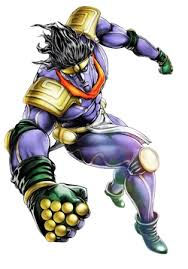
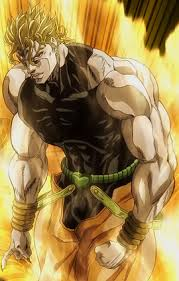

Star Platinum
Star Platinum, the Stand of Jotaro Kujo, is known for its unrivaled strength, speed, and precision.
DIO - The Invincible
After absorbing Joseph Joestar's blood, DIO gained the power of ZA WARUDO. Activate his time-stopping ability below.
Time has been stopped!
Easter Eggs
Hover over the image below to uncover a Part 5 reference!